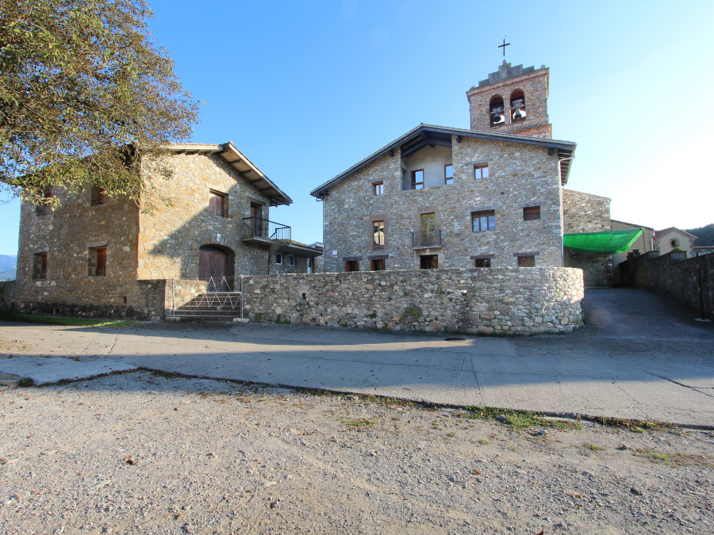
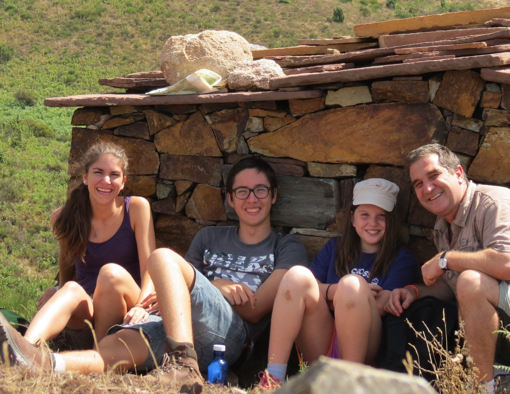

La festa 🎉
La festa serà durant el cap de setmana del 8 al 10 de maig. Ja tenim casa reservada: una masia a Sant Pau de Segúries, al Ripollès. Si voleu ubicació i més informació sobre el lloc, només cal clicar sobre la imatge.

📍 Clica la imatge per veure la ubicació
Per organització d'espais, àpats i al·lèrgies, ens aniria bé que, si no ho heu fet, omplissiu el formulari:
FORMULARIQuè s’ha de portar?
- Roba còmode
- Sac de dormir i coixinera
- Roba de mudar (si voleu per dissabte nit)
- Tovallola (hi ha dutxa i piscina)
- Banyador si voleu
- Neceser bàsic amb sabó, xampú i el que vulgueu
Ja farem recordatori 😉
Anells i caixa

Els anells i la caixa són obra de la nostra gran amiga Gemma. Us deixem l'enllaç amb el seu Instagram perquè pugueu veure les seves creacions.
